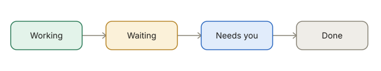

Running agents in coool
Three steps from a new session to a finished change.
- Start a sessionPress ⌘T, pick the project folder and Claude Code or Codex.
- Say what you wantOne clear goal per session. Steps, jobs and subagents show as they run.
- Answer when askedA blue dot means it needs you: approve a step or answer a question.

Scripts are off.